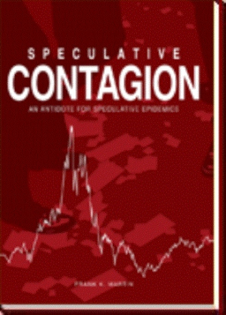

弗兰克·马丁（Frank K. Martin）1964年从西北大学完成投资管理专业学习，之后二十年从事市政金融、公司并购等业务，1978年又在印第安纳大学南本德分校取得MBA。1987年，他在印第安纳州埃尔克哈特创办投资管理公司，后来更名为Martin Capital Management。公司远离纽约金融中心，客户却同样置身于1990年代末的投机热潮：工厂职工在401(k)账户里追逐科技基金，机构投资者把互联网公司的点击量当成估值依据，基金经理则担心落后于指数后失去客户。《Speculative Contagion》记录的正是马丁如何在这股压力中坚持价值投资，以及他写给客户的解释为何不是事后补写。
本书全名为《Speculative Contagion: An Antidote for Speculative Epidemics》，2005年11月由AuthorHouse出版，精装316页，ISBN为9781425900755。正文主要取材于马丁在泡沫形成、破裂和市场复苏期间写下的客户信与投资备忘录，因此读者能按时间看到他的判断：互联网确实会改变商业，但技术进步并不自动证明任何买入价格都合理；风险不是股价短期波动，而是以过高价格购买盈利能力未经验证的资产后永久损失本金；当同业收益远高于自己时，最困难的动作往往不是发现泡沫，而是忍受看似落后的业绩。出版方对本书的概括也强调，它是一份"实时、真金白银"的内部记录，而非在纳斯达克崩盘后重新包装的预测。
"传染"在书中不是修辞装饰，而是一条行为链：上涨带来新闻报道，报道吸引新资金，新资金继续推高价格，价格又被当成新经济逻辑正确的证据。利益链上的投行、券商、媒体和公司管理层都可能强化这种反馈，而普通投资者最容易把别人短期赚到的钱理解为自己必须马上行动的信号。马丁还把这类狂热与历史案例放在一起比较，提醒读者工具和故事会变，价格脱离可验证现金流的机制却会重复。给出的"解药"不是预测指数顶部，而是回到本杰明·格雷厄姆式的安全边际：区分价格与价值，检查盈利和自由现金流，避免依赖融资才能成立的商业模式，持有足够现金，并在没有便宜资产时接受暂时无所作为。他尤其提醒，投资者要预先承认自己的情绪承受能力，因为纸面亏损一旦超过心理极限，再正确的长期判断也可能被迫在最坏时点终止。
2008年金融危机后，马丁把本书内容扩充、重新编排，并加入房地产泡沫与大衰退时期的客户通信，于2011年由Wiley出版《A Decade of Delusions》。Wiley对后书的介绍明确称它更新并延伸了《Speculative Contagion》，詹姆斯·蒙蒂尔（James Montier）也在推荐语中把这些文章称为来自投资一线的记录。目前没有正式中文译本。与后来覆盖两次危机的厚书相比，本书范围更窄，只保存互联网泡沫前后的一段时间线；好处是读者能检查作者在当时知道什么、如何向客户解释落后，坏处是文章由作者事后选编，仍存在选择性。它没有公布一套足以独立重建组合收益的逐期持仓，因此“实时写作”也不能等同于完整业绩验证，读者能核对的是论点形成时间，不是全部账户结果。把两本书对读，重点不应只是确认他“看对了泡沫”，还应查找他当时遗漏的风险、现金持有的机会成本，以及危机后是否修改了原有判断。